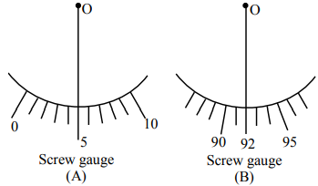

⚡ Units & Measurements
84
Total Questions
5
Years
3
Clusters
Question Clusters
PHY-UNITMEAS-ERRORS_MEASURE
Units & Measurements: Errors in Measurement & Significant Figures
PHY-UNITMEAS-DIM_ANALYSIS
Units & Measurements: Dimensional Analysis & Formula Deduction
PHY-UNITMEAS-UNITS_CONV
Units & Measurements: SI Units & Unit Conversion
Year-wise Frequency
| Year | Questions | Frequency |
|---|---|---|
| 2021 | 21 | |
| 2022 | 12 | |
| 2023 | 14 | |
| 2024 | 34 | |
| 2025 | 3 |
Questions
Showing first 50 of 84 questions.
Q1 (2021 Shift 2)
A student determined Young's Modulus of elasticity using the formula 𝑌= 𝑀𝑔𝐿3 . The value of 𝑔 is taken to be 4bd3δ 9 . 8 m s-2 without any significant error, his observations are as following. Least count of the Equipment used for Observed Physical Quantity measurement Value Mass ( M ) 1 g 2 kg Length of bar ( L ) 1 mm 1 m Breadth of bar ( b ) 0 . 1 mm 4 cm Thickness of bar ( d ) 0 . 01 mm 0 . 4 cm Depression ( δ ) 0 . 01 mm 5 mm Then the fractional error in the measurement of 𝑌 is :
PHY-2021-0101-S2-Q001
Q20 (2021 Shift 1)
One main scale division of a vernier callipers is a cm and division of the vernier scale coincide with (n −1)th division of the main scale. The least count of the callipers in mm is :
PHY-2021-0101-S1-Q020
Q21 (2021 Shift 1)
The resistance R = V , where V = (50 ± 2) V and I = (20 ± 0. 2) A . The percentage error in R is x % . The I value of x to the nearest integer is ________.
Answer:
5PHY-2021-0101-S1-Q021
Q1 (2021 Shift 2)
In order to determine the Young's Modulus of a wire of radius 0. 2 cm (measured using a scale of least count ) and length (measured using a scale of least count ), a weight of mass = 0. 001 cm 1 m = 1 mm 1 kg (measured using a scale of least count = 1 g ) was hanged to get the elongation of 0. 5 cm (measured using a scale of least count 0. 001 cm ). What will be the fractional error in the value of Young's Modulus determined by this experiment?
PHY-2021-0101-S2-Q001
Q20 (2021 Shift 1)
The vernier scale used for measurement has a positive zero error of 0. 2 mm. If while taking a measurement it was noted that 0 on the vernier scale lies between 8. 5 cm and 8. 6 cm . Vernier coincidence is 6, then the correct value of measurement is cm. (least count = 0. 01 cm )
PHY-2021-0101-S1-Q020
Q21 (2021 Shift 2)
The radius of a sphere is measured to be (7. 50 ± 0. 85) cm . Suppose the percentage error in its volume is x . The value of , to the nearest , is ___ . x x
Answer:
34PHY-2021-0101-S2-Q021
Q2 (2021 Shift 2)
If time (t), velocity (v), and angular momentum (l) are taken as the fundamental units. Then the dimension of mass in terms of and is: (m) t, v l
PHY-2021-0101-S2-Q002
Q20 (2021 Shift 1)
The pitch of the screw gauge is 1 mm and there are 100 divisions on the circular scale. When nothing is put in between the jaws, the zero of the circular scale lies 8 divisions below the reference line. When a wire is placed between the jaws, the first linear scale division is clearly visible while 72nd division on circular scale coincides with the reference line. The radius of the wire is
PHY-2021-0101-S1-Q020
Q1 (2021 Shift 2)
If e is the electronic charge, c is the speed of light in free space and h is Planck's constant, the quantity 1 |e|2 4πε0 hc has dimensions of : [MLT0] [M0 L0 T0]
PHY-2021-0101-S2-Q001
Q30 (2021 Shift 1)
Student 𝐴 and student 𝐵 used two screw gauges of equal pitch and 100 equal circular divisions to measure the radius of a given wire. The actual value of the radius of the wire is 0 . 322 cm. The absolute value of the difference between the final circular scale readings observed by the students 𝐴 and 𝐵 is _______. [Figure shows position of reference 𝑂 when jaws of screw gauge are closed] Given pitch = 0 . 1 cm.

Answer:
13PHY-2021-0101-S1-Q030
Q2 (2021 Shift 2)
The force is given in terms of time t and displacement x by the equation F = A cos Bx + C sin Dt The dimensional formula of AD is: B
PHY-2021-0101-S2-Q002
Q2 (2021 Shift 1)
If and denote the quantities as energy, angular momentum, mass and constant of gravitation E, L, M G respectively, then the dimensions of P in the formula P = EL2M −5G−2 are:
PHY-2021-0101-S1-Q002
Q20 (2021 Shift 1)
In a Screw Gauge, fifth division of the circular scale coincides with the reference line when the ratchet is closed. There are 50 divisions on the circular scale, and the main scale moves by 0. 5 mm on a complete rotation. For a particular observation the reading on the main scale is 5 mm and the 20th division of the circular scale coincides with reference line. Calculate the true reading.
PHY-2021-0101-S1-Q020
Q1 (2021 Shift 1)
In a typical combustion engine the workdone by a gas molecule is given by α2βe −βx2 , where is the W = k T x displacement, k is the Boltzmann constant and T is the temperature. If α and β are constants, dimensions of α will be:
PHY-2021-0101-S1-Q001
Q2 (2021 Shift 2)
If C and V represent capacity and voltage respectively then what are the dimensions of λ where C/V = λ ?
PHY-2021-0101-S2-Q002
Q2 (2021 Shift 1)
If E and H represents the intensity of electric field and magnetizing field respectively, then the unit of E will H be:
PHY-2021-0101-S1-Q002
Q2 (2021 Shift 2)
If force (F), length (L) and time (T) are taken as the fundamental quantities. Then what will be the dimension of density:
PHY-2021-0101-S2-Q002
Q20 (2021 Shift 1)
Assertion A : If in five complete rotations of the circular scale, the distance travelled on the main scale of the screw gauge is 5 mm and there are 50 total divisions on a circular scale, then the least count is 0. 001 cm. Reason R : Least Count = Pitch Total divisions on circular scale In the light of the above statements, choose the most appropriate answer from the options given below.
PHY-2021-0101-S1-Q020
Q1 (2021 Shift 2)
A physical quantity y is represented by the formula y = m2r−4 2 If the percentage errors found in y, m, r, l and g are 18, 1, 0. 5, 4 and p respectively, then find the value of x and p .
PHY-2021-0101-S2-Q001
Q3 (2021 Shift 2)
If velocity 𝑉 time 𝑇 and force 𝐹 are chosen as the base quantities, the dimensions of the mass will be :
PHY-2021-0101-S2-Q003
Q30 (2021 Shift 2)
The diameter of a spherical bob is measured using a vernier callipers. 9 divisions of the main scale, in the vernier callipers, are equal to divisions of vernier scale. One main scale division is The main scale 10 1 mm . reading is 10 mm and 8th division of vernier scale was found to coincide exactly with one of the main scale division. If the given vernier callipers has positive zero error of 0 . 04 cm, then the radius of the bob is _____________ 10-2 × cm .

Answer:
52PHY-2021-0101-S2-Q030
Q1 (2022 Shift 1)
If 𝑍= 𝐴2𝐵3 , then the relative error in 𝑍 will be 𝐶4
PHY-2022-0101-S1-Q001
Q21 (2022 Shift 2)
For 𝑧= 𝑎2𝑥3𝑦 1 2, where '𝑎' is a constant. If percentage error in measurement of '𝑥' and '𝑦' are 4%and 12%, respectively, then the percentage error for '𝑧' will be _____ % .
Answer:
18PHY-2022-0101-S2-Q021
Q1 (2022 Shift 1)
An expression for a dimensionless quantity P is given by P = α loge( kT ) ; where α and β are constants, x is β βx distance; k is Boltzmann constant and T is the temperature. Then the dimensions of α will be
PHY-2022-0101-S1-Q001
Q30 (2022 Shift 1)
In a vernier callipers, each cm on the main scale is divided into 20 equal parts. If tenth vernier scale division coincides with nineth main scale division. Then the value of vernier constant will be _____ ×10−2 mm
Answer:
5PHY-2022-0101-S1-Q030
Q1 (2022 Shift 2)
The dimension of mutual inductance is
PHY-2022-0101-S2-Q001
Q30 (2022 Shift 2)
A travelling microscope is used to determine the refractive index of a glass slab. If 40 divisions are there in 1 cm on main scale and 50 Vernier scale divisions are equal to 49 main scale divisions, then least count of the travelling microscope is _____ ×10−6 m .

Answer:
5PHY-2022-0101-S2-Q030
Q1 (2022 Shift 1)
A silver wire has a mass (0. 6 ± 0. 006)g , radius (0. 5 ± 0. 005) mm and length (4 ± 0. 04) cm . The maximum percentage error in the measurement of its density will be
PHY-2022-0101-S1-Q001
Q2 (2022 Shift 2)
The SI unit of a physical quantity is Pascal ‐ sec . The dimensional formula of this quantity will be
PHY-2022-0101-S2-Q002
Q3 (2022 Shift 2)
If L, C and R are the self inductance, capacitance and resistance respectively, which of the following does not have the dimension of time? √LC L
PHY-2022-0101-S2-Q003
Q30 (2022 Shift 2)
A student in the laboratory measures thickness of a wire using screw gauge. The readings are 1. 22 mm, 1. 23 mm, 1. 19 mm and 1. 20 mm . The percentage error is 121 x % . The value of x is _____ .
Answer:
150PHY-2022-0101-S2-Q030
Q2 (2022 Shift 1)
In van dar Wall equation [P a ][V is pressure, is volume, is universal gas constant and + V 2 −b] = RT; P V R is temperature. The ratio of constants a is dimensionally equal to : T b
PHY-2022-0101-S1-Q002
Q30 (2022 Shift 2)
The Vernier constant of Vernier callipers is 0. 1 mm and it has zero error of (−0. 05 cm) . While measuring diameter of a sphere, the main scale reading is 1. 7 cm and coinciding vernier division is 5 . The corrected diameter will be _____ ×10−2 . cm
Answer:
180PHY-2022-0101-S2-Q030
Q22 (2023 Shift 1)
A particle of mass 10 g moves in a straight line with retardation 2𝑥, where 𝑥 is the displacement in SI units. 10 -𝑛 Its loss of kinetic energy for above displacement is 𝑥 J . The value of 𝑛 will be ________ .
Answer:
2PHY-2023-0101-S1-Q022
Q3 (2023 Shift 1)
Dimension of 1 should be equal to μ0ε0
PHY-2023-0101-S1-Q003
Q10 (2023 Shift 1)
An aluminium rod with Young’s modulus Y = 7. 0 × 1010 N m−2 undergoes elastic strain of 0. 04% . The energy per unit volume stored in the rod in SI unit
PHY-2023-0101-S1-Q010
Q1 (2023 Shift 1)
A physical quantity 𝑃 is given as 𝑃= 𝑎2𝑏3 𝑐√𝑑. The percentage error in the measurement of 𝑎, 𝑏, 𝑐 and 𝑑 are 1 % , 2 % , 3% and 4% respectively. The percentage error in the measurement of quantity 𝑃 will be
PHY-2023-0101-S1-Q001
Q20 (2023 Shift 2)
In an experiment with vernier callipers of least count 0 . 1 mm, when two jaws are joined together the zero of vernier scale lies right to the zero of the main scale and 6th division of vernier scale coincides with the main scale division. While measuring the diameter of a spherical bob, the zero of vernier scale lies in between 3 . 2 cm and 3 . 3 cm marks and 4th division of vernier scale coincides with the main scale division. The diameter of bob is measured as
PHY-2023-0101-S2-Q020
Q2 (2023 Shift 2)
If force (F) , velocity (V ) and time (T) are considered as fundamental physical quantity, then dimensional formula of density will be : 4 −6 −4 −2
PHY-2023-0101-S2-Q002
Q7 (2023 Shift 2)
Given below are two statements: one is labelled as Assertion A and the other is labelled as Reason R Assertion A : A spherical body of radius ( 5 ± 0 . 1 ) mm having a particular density is falling through a liquid of constant density. The percentage error in the calculation of its terminal velocity is 4%. Reason R : The terminal velocity of the spherical body falling through the liquid is inversely proportional to its radius. In the light of the above statements, choose the correct answer from the options given below
PHY-2023-0101-S2-Q007
Q9 (2023 Shift 1)
A travelling wave is described by the equation 𝑦𝑥, 𝑡= 0 . 05sin8𝑥- 4𝑡 m. The velocity of the wave is: [All the quantities are in SI unit]
PHY-2023-0101-S1-Q009
Q1 (2023 Shift 1)
Match List I with List II : List-I (Physical Quantity) List-II (Dimensional Formula) A Pressure gradient I [M0L2T−2] B Energy density II [M1L−1T−2] C Electric Field III [M1L−2T−2] [M1L1T−3A−1] D Latent heat IV Choose the correct answer from the options given below:
PHY-2023-0101-S1-Q001
Q2 (2023 Shift 2)
The equation of a circle is given by x2 + y2 = a2 , where a is the radius. If the equation is modified to change the origin other than (0, 0) , then find out the correct dimensions of A and B in a new equation : (x −At)2 + (y − t ) 2 = a2 The dimensions of B is given as [T−1] t
PHY-2023-0101-S2-Q002
Q1 (2023 Shift 1)
Electric field in a certain region is given by →𝐸= 𝐴 ^i + 𝐵 ^j. The SI unit of 𝐴 and 𝐵 are : 𝑥2 𝑦3
PHY-2023-0101-S1-Q001
Q30 (2023 Shift 1)
In a screw gauge, there are 100 divisions on the circular scale and the main scale moves by 0 . 5 mm on a complete rotation of the circular scale. The zero of circular scale lies 6 divisions below the line of graduation when two studs are brought in contact with each other. When a wire is placed between the studs, linear scale 4 divisions are clearly visible while 46th division the circular scale coincide with the reference line. The diameter of the wire is ______ × 10-2 mm .

Answer:
220PHY-2023-0101-S1-Q030
Q16 (2023 Shift 2)
As shown in figure, a cuboid lies in a region with electric field E = 2x2ˆi −4yˆj + N C−1 . The magnitude of charge within the cuboid is nε0 C . The value of n is ______ (if dimension of cuboid is 1 × 2 × 3 m3 )
PHY-2023-0101-S2-Q016
Q30 (2023 Shift 2)
Given below are two statements Statement I : For transmitting a signal, size of antenna (l) should be comparable to wavelength of signal (at least l = λ 4 in dimension). Statement II : In amplitude modulation, amplitude of carrier wave remains constant (unchanged). In the light of the above statements, choose the most appropriate answer from the options given below (1) Both Statement I and Statement II are correct (2) Both Statement I and Statement II are incorrect (3) Statement I is incorrect but Statement II is (4) Statement I is correct but Statement II is correct incorrect
Answer:
136PHY-2023-0101-S2-Q030
Q1 (2024 Shift 1)
The radius 𝑟, length 𝑙 and resistance 𝑅 of a metal wire was measured in the laboratory as 𝑟= 0 .35 ± 0 .05 cm, 𝑅= 100 ± 10 ohm, 𝑙= 15 ± 0 .2 cm The percentage error in resistivity of the material of the wire is :
PHY-2024-0101-S1-Q001
Q2 (2024 Shift 1)
The dimensional formula of angular impulse is :
PHY-2024-0101-S1-Q002
Q20 (2024 Shift 1)
10 divisions on the main scale of a Vernier calliper coincide with divisions on the Vernier scale. If each 11 division on the main scale is of 5 units, the least count of the instrument is : 1 10
PHY-2024-0101-S1-Q020